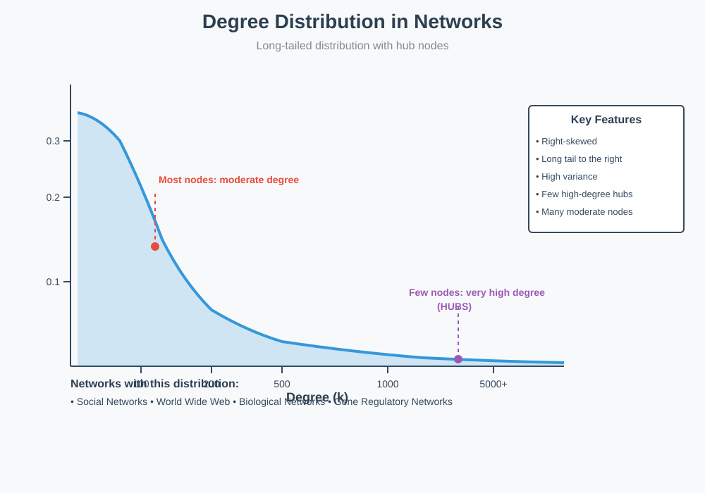
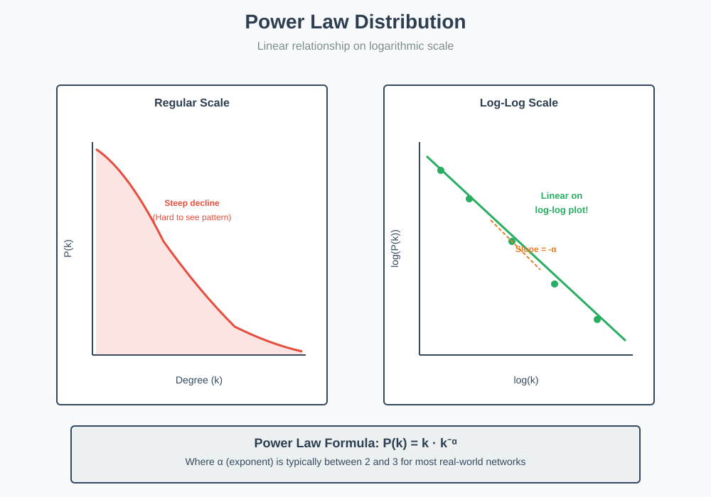
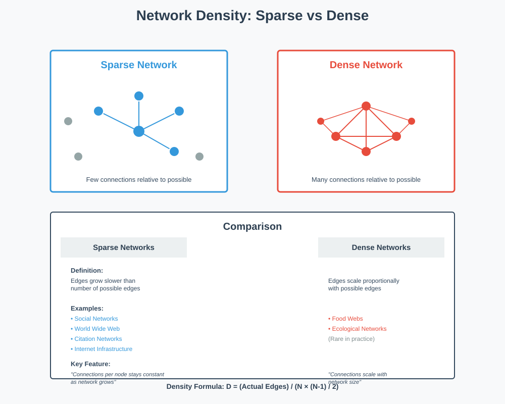
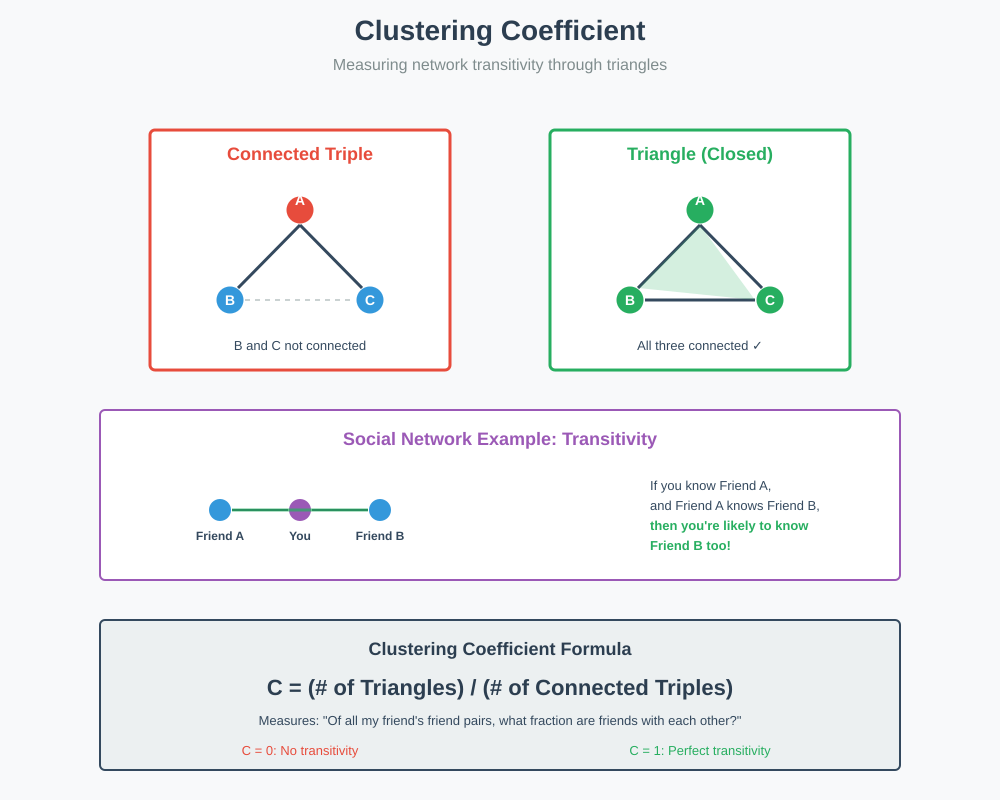
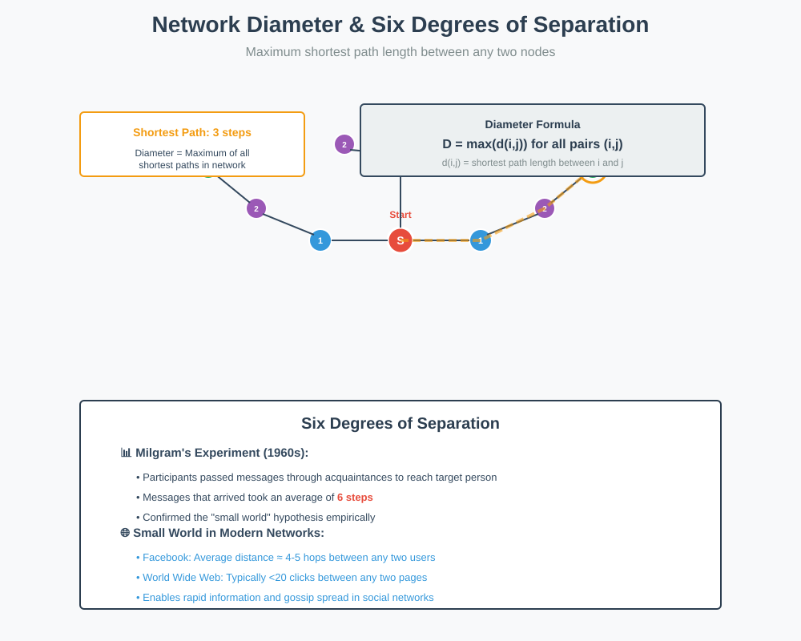

Global Network Statistics
📋 Quick Navigation
- Introduction
- Degree Distribution
- Power Law Distribution
- Network Density
- Clustering Coefficient
- Network Diameter
- References & Further Reading
Introduction
Understanding networks requires looking beyond individual node properties to examine the structure of the entire network. While knowing the degree of individual nodes provides local information, global network statistics reveal patterns that characterize the network as a whole. This document explores the fundamental metrics used to analyze and understand complex network structures.
Key Global Network Measures:
- Degree Distribution: The probability distribution of node degrees across the network
- Network Density: The fraction of possible edges that actually exist
- Clustering Coefficient: The tendency of nodes to form tightly connected groups
- Network Diameter: The maximum shortest path length between any two nodes

Degree Distribution
Rather than examining individual node degrees, understanding the complete network structure requires analyzing the degree distribution - for each degree k, we compute the fraction of nodes in the network that have degree k.
Characteristics of Real-World Networks
Social Networks:
- Skewed Distribution: Most individuals have a moderate number of connections (e.g., 100-200 friends)
- Long Tail: A small number of highly connected individuals (celebrities) have thousands of connections
- High Variance: The distribution exhibits very high variance due to these "hub" nodes
Hub Nodes:
High-degree nodes that play a critical role in network connectivity are called hubs. These nodes:
- Connect to many other nodes in the network
- Serve as critical information pathways
- Appear across many different types of networks
Networks Exhibiting Hub Structure:
- World Wide Web: Popular websites serve as hubs linking to many other sites
- Biological Networks: Certain proteins interact with many other proteins
- Gene Regulatory Networks: Master regulator genes control many downstream genes
- Citation Networks: Seminal papers receive citations from numerous subsequent works
Mathematical Representation
The degree distribution P(k) represents the probability that a randomly selected node has degree k:
P(k) = (Number of nodes with degree k) / (Total number of nodes)
Where:
- P(k) = probability of degree k
- k = node degree (number of connections)
- ∑P(k) = 1 (probabilities sum to one)
Power Law Distribution
Many real-world networks exhibit a power law degree distribution, where the degree distribution appears linear when plotted on a logarithmic scale.

Understanding Power Laws
A power law distribution has the mathematical form:
Y = kX^α
Where:
- Y = dependent variable (fraction of nodes)
- X = independent variable (degree)
- α = exponent of the power law (typically negative)
- k = scaling constant
Key Properties
Proportional Relationships:
- A relative change in one quantity results in a proportional relative change in another
- Example: Doubling the side length of a square (2 to 4 inches) quadruples the area (4 to 16 square inches)
Inverse Relationships:
The relationship Y = X^(-1) is also a power law, where:
- An increase in X produces a proportional decrease in Y
- This captures the "rich get richer" phenomenon in networks
Logarithmic Representation
When plotted on log-log axes:
log(P(k)) = log(k) + α·log(k)
The relationship appears linear with slope α.
Networks Following Power Law:
- World Wide Web: Website connectivity patterns
- Internet: Router connection topology
- Citation Networks: Paper citation patterns
- Metabolic Networks: Biochemical reaction pathways
- Protein Interaction Networks: Molecular interaction patterns
Universal Exponent
Remarkably, the exponent α is typically between 2 and 3 across diverse network types, suggesting universal organizing principles despite vastly different application domains and network sizes.
Network Density
Network density quantifies the fraction of possible edges that actually exist in the network, providing insight into how connected the network is overall.

Mathematical Definition
For a simple graph with N nodes (no multi-edges or self-loops):
Maximum Edges = (N choose 2) = N × (N-1) / 2
Density = (Actual Edges) / (Maximum Possible Edges)
Where:
- N = number of nodes in the network
- Actual Edges = number of edges present
- Maximum Possible Edges = number of potential connections
Sparse Networks
Definition: Networks where the number of edges grows slower than the number of possible edges as the network scales.
Characteristics:
- Average degree remains relatively constant as network size increases
- Number of connections per node doesn't scale with network size
- Density decreases as the network grows
Examples of Sparse Networks:
- Social Networks: You don't gain millions of friends just because millions of people join Facebook
- World Wide Web: Websites don't link to a proportional fraction of all other websites
- Citation Networks: Papers cite a fixed number of references regardless of total papers published
- Internet: Routers maintain a manageable number of connections
Example - Social Networks:
A school network with 1,000 students might have:
- Average connections per student: 20-100 friends
Facebook with 1 billion users:
- Average connections per user: Several hundred friends (not millions)
- Connections don't scale linearly with network size
Dense Networks
Definition: Networks where the number of edges scales proportionally with the number of possible edges.
Characteristics:
- Edges increase as nodes increase
- Higher connectivity ratio maintained
- Relatively rare in real-world networks
Example - Food Webs:
Ecological networks can be dense because:
- Larger animals tend to eat smaller animals without much species discrimination
- A zebra and an antelope are equally viable prey for a lion
- Adding more species to an ecosystem proportionally increases predator-prey relationships
- The number of feeding relationships scales with ecosystem size
Key Insight:
Most real-world complex networks are sparse, which has important implications for:
- Network algorithms and computational complexity
- Information propagation speed
- Network robustness and vulnerability
- Storage and representation efficiency
Clustering Coefficient
The clustering coefficient quantifies the degree to which nodes in a network tend to form tightly connected groups or clusters, measuring the transitivity of relationships.

Transitivity Concept
Social Network Example:
If Person A knows Person B, and Person B knows Person C, then Person A is more likely to know Person C than a randomly selected person.
This creates triangles in the network structure:
- High transitivity → Many triangles
- Low transitivity → Few triangles
Triangle Density vs Clustering Coefficient
Initial Approach - Triangle Density:
For a network with n nodes:
Maximum Triangles = (n choose 3) = n × (n-1) × (n-2) / 6
Triangle Density = (Actual Triangles) / (Maximum Triangles)
Problem with Triangle Density:
This metric can be misleading for networks with multiple disconnected components:
- A completely connected subgraph has low triangle density if many isolated nodes exist
- Doesn't capture local clustering patterns effectively
Proper Clustering Coefficient
Better Definition:
Clustering Coefficient = (Number of Triangles) / (Number of Connected Triples)
Where:
- Triangle: Three nodes all connected to each other
- Connected Triple: Three nodes where one node connects to the other two
This measures: "Of all the pairs of friends my friend has, how many are friends with each other?"
Mathematical Formula:
C = (3 × Number of Triangles) / (Number of Connected Triples)
The factor of 3 accounts for the fact that each triangle contributes to three connected triples.
Value Range:
- C = 0: No triangles (no transitivity)
- C = 1: All connected triples close to form triangles (perfect transitivity)
Network Type Comparisons
High Clustering:
- Social Networks: Friends of friends tend to be friends
- Scientific Collaboration: Researchers often form tight-knit research groups
Low Clustering:
- Internet Infrastructure: Triangles represent redundancy (often avoided)
- Power Grids: Redundant connections are costly
- Tree Structures: By definition contain no triangles
Medium Clustering:
- World Wide Web: Some clustering but not as pronounced as social networks
- Biological Networks: Varies by specific network type
Network Diameter
The diameter of a network represents the maximum shortest path length between any two nodes, quantifying the network's overall "size" in terms of information flow.

Definition
Formal Definition:
Diameter = max(shortest_path(i, j)) for all node pairs (i, j)
Where:
- shortest_path(i, j) = minimum number of edges connecting nodes i and j
- Also called the maximal geodesic distance
Interpretation:
The diameter represents the maximum "information travel time" assuming:
- Information follows the shortest available path
- Each edge traversal takes one time unit
- The network is connected (path exists between all node pairs)
Small World Phenomenon
Six Degrees of Separation:
The famous concept that any two people in the world are connected by at most 5 intermediaries (6 total steps).
Mathematical Statement:
For the global social network:
Diameter ≤ 6
This means the maximum shortest path between any two people is at most 6.
Milgram's Experiment (1960s)
Experimental Design:
- Participants received packages to deliver to specific target individuals
- Could only pass packages to personal acquaintances
- Acquaintances would continue the chain
Results:
- Many packages never reached their destination
- Packages that arrived took an average of 6 steps
- Confirmed the small world hypothesis empirically
Implications:
- Information can spread very rapidly through social networks
- News and gossip propagate quickly (e.g., friend's wedding announcement, baby news)
- Viral phenomena become possible in connected networks
Small World Effect in Real Networks
Observed Small Diameters:
Despite massive sizes, many networks have surprisingly small diameters:
- World Wide Web: Typically less than 20 clicks between any two pages
- Social Networks: Facebook diameter approximately 4-5 hops
- Collaboration Networks: Kevin Bacon number rarely exceeds 6
- Neural Networks: Efficient information processing despite billions of neurons
Why Small Worlds Exist:
- Hub Nodes: Highly connected nodes dramatically reduce path lengths
- Clustering with Shortcuts: Local clustering plus occasional long-range connections
- Power Law Distribution: Heavy-tailed degree distributions create efficient routing
🎯 Key Takeaways
Three Complementary Global Measures:
- Degree Distribution: Reveals the presence of hubs and the heterogeneity of connectivity
- Clustering Coefficient: Quantifies local group formation and transitivity
- Network Diameter: Measures the efficiency of information flow across the network
Universal Patterns:
Many real-world networks share common characteristics:
- Power law degree distributions with exponents between 2 and 3
- Sparse connectivity that doesn't scale with network size
- Small world property with surprisingly short path lengths
- Moderate to high clustering in social and biological networks
Practical Applications:
Understanding these global statistics enables:
- Network Design: Optimizing structure for robustness or efficiency
- Vulnerability Analysis: Identifying critical nodes and failure modes
- Information Spread: Predicting propagation patterns and speeds
- Anomaly Detection: Identifying unusual structures or behaviors
References & Further Reading
Foundational Papers:
- Watts, D. J., & Strogatz, S. H. (1998). "Collective dynamics of 'small-world' networks." Nature, 393(6684), 440-442.
- Barabási, A. L., & Albert, R. (1999). "Emergence of scaling in random networks." Science, 286(5439), 509-512.
Classic Experiments:
- Milgram, S. (1967). "The small world problem." Psychology Today, 1(1), 60-67.
- Travers, J., & Milgram, S. (1969). "An experimental study of the small world problem." Sociometry, 32(4), 425-443.
Comprehensive Textbooks:
- Newman, M. E. J. (2018). Networks: An Introduction (2nd ed.). Oxford University Press.
- Barabási, A. L. (2016). Network Science. Cambridge University Press.
Online Resources:
- Network Science Book (free online): http://networksciencebook.com/
- Stanford Network Analysis Project (SNAP): http://snap.stanford.edu/
- NetworkX Python Library Documentation: https://networkx.org/
Advanced Topics:
- Clauset, A., Shalizi, C. R., & Newman, M. E. J. (2009). "Power-law distributions in empirical data." SIAM Review, 51(4), 661-703.